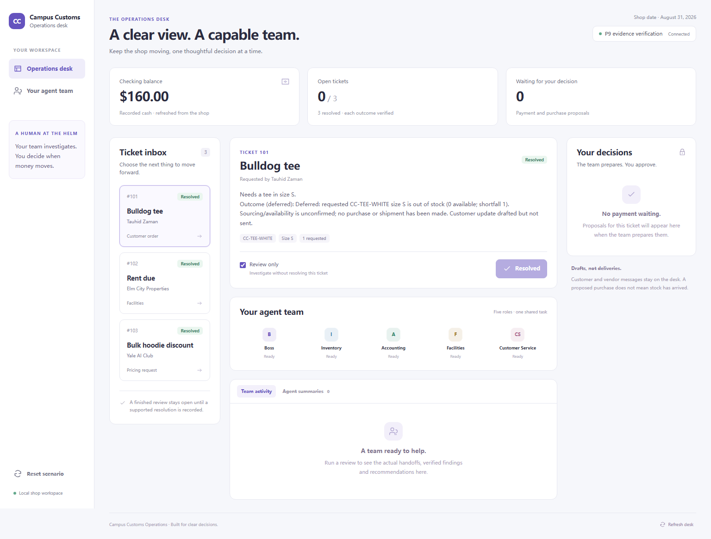
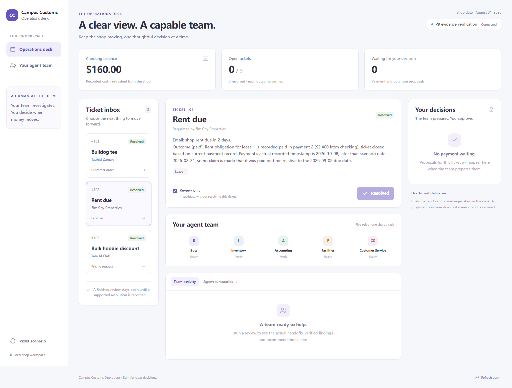
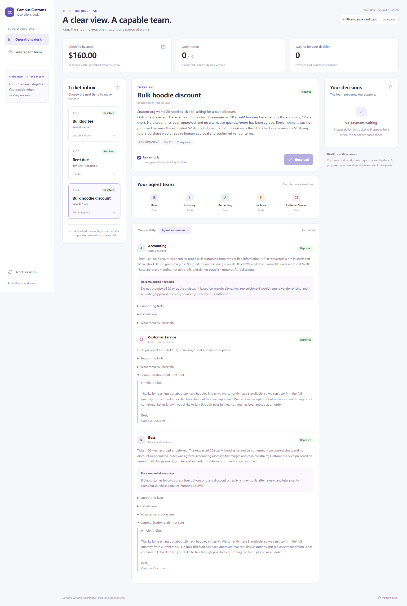

Three recorded dispositions.
Checking: $3,400 − $840 − $2,400 = $160. Screenshots were taken from the actual React dashboard after all three tickets were resolved. “Deferred” is not fulfilled; no stock arrival or sent customer communication is claimed.
Expected / Actual / Cash · Detailed outcomes and authorizations
Ticket 101 · deferred
Ticket 101 was recorded as deferred because one requested size-S tee is out of stock. No purchase, shipment, or customer communication occurred; a customer update was drafted but not sent.
Source: production backend + live Portkey agents; final run f6305ed5fac448f6a3b882474c897817.
Ticket 102 · paid
Ticket 102 was resolved as paid based on the recorded $2,400 rent payment (payment 2). No duplicate payment proposal was created. The ticket outcome was recorded; no communication was sent.
Source: production backend + live Portkey agents; final run baa7643853694fd7918846baab58a0b0.
Ticket 103 · deferred
Ticket 103 was recorded as deferred. The requested 20 size-M hoodies cannot be confirmed from current stock, and no discount or alternative order was agreed. Accounting assessed the margin and cash constraint; Customer Service prepared an unsent draft. No payment, purchase, shipment, or customer communication occurred.
Source: production backend + live Portkey agents; final run 7823cf327e154da6b637ffa09e3a86d6.
Captured 2026-10-08T16:15:51.477Z. Local screenshots are supplied alongside this standalone page; no web server is needed to view it.